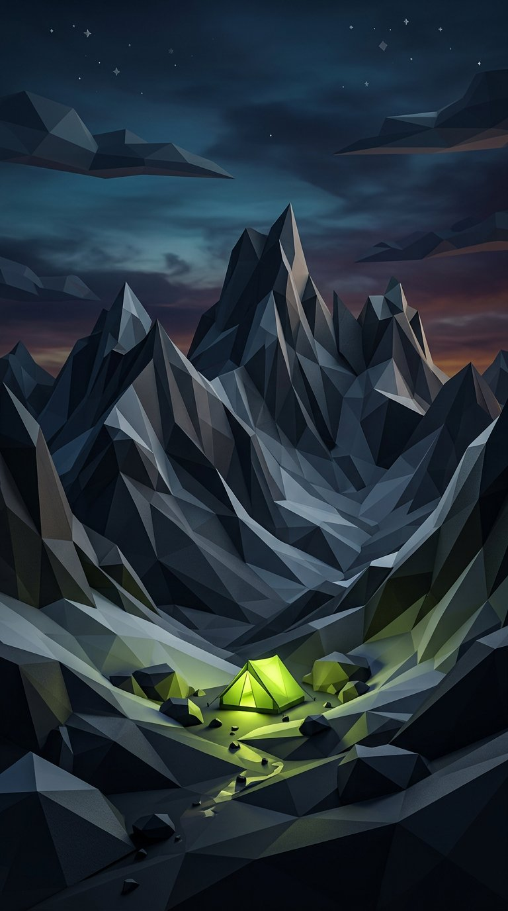

Fjell
An outdoor brand that looks like the mountain, not the gift shop.

Overview
Fjell makes technical outdoor gear in Western Norway. As design lead I built the entire brand from the bedrock up: a faceted mountain mark, a type system that survives rain droplets on packaging, photography direction shot in actual weather, and the e-commerce experience that ties it together.
The Challenge
The outdoor market is crowded with brands shouting in capital letters. Fjell’s founders wanted credibility with hardcore hikers and appeal for Sunday strollers — two audiences that usually require two different brands.
The Process
Find the shape
We studied topographic maps and settled on a faceted, low-poly peak — geometric enough to embroider on a sleeve, organic enough to feel earned.
System over logo
Color, type and layout rules were designed as weather layers: a calm base, a signal accent, and a voice that informs first and inspires second.
Store as trailhead
The shop opens with conditions and stories, not discounts. Product pages read like route cards — specs, terrain, care, and the trip it was designed for.
The Outcome
The brand launched with a sell-out first drop. Returning customers grew 2.7× year over year, and the faceted mark now rides chairlifts all over Scandinavia on sleeves and skis.
Next ProjectYou made our gear look the way it feels out there.
Fjell co-founder